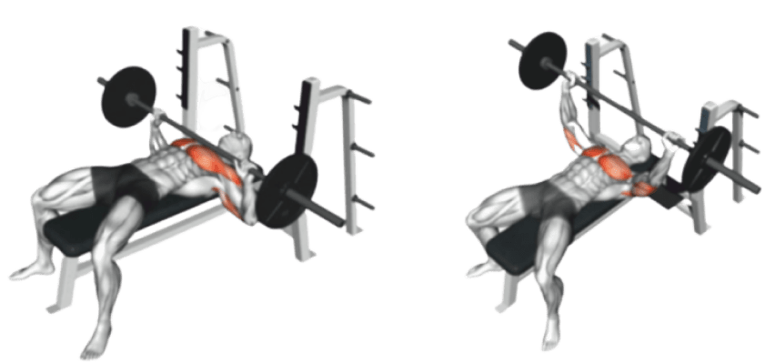

벤치 프레스
가슴 전체를 강화하는 데 가장 일반적으로 사용되는 운동 중 하나입니다.
- 1. 바벨을 적당한 무게로 세팅합니다. 바벨은 다리로 끌어올려 허리 위쪽에 위치하도록 하고, 손으로 벤치에 대고 바벨이 떨어지지 않도록 잡습니다.
- 2. 벤치 위에 누워 바벨을 잡습니다. 손바닥은 약지 이상의 손가락으로 묶고, 엄지는 바벨 아래에 위치시킵니다.
- 3. 바벨을 천천히 내리면서 가슴 근육을 사용합니다. 팔꿈치는 약간 몸쪽으로 모아서 내려야 합니다. 가슴 근육이 힘을 내어 바벨이 흔들리는 것을 막아줍니다.
- 4. 바벨이 가슴 근육과 수평선 정도까지 내려왔을 때, 바벨을 다시 밀어올립니다. 이때 팔꿈치를 완전히 펴지 않고, 살짝 구부리도록 합니다.
- 5. 바벨을 올리고 내릴 때 숨을 쉬어야 합니다. 바벨을 내릴 때는 숨을 들이마시고, 바벨을 올릴 때는 숨을 내쉬도록 합니다.
- 6. 세트 수와 반복 횟수는 자신의 체력과 목표에 맞게 조절합니다. 보통 3-4 세트를 하고, 각 세트마다 6-12 회 정도를 하는 것이 일반적입니다.
벤치 프레스 자극 부위
